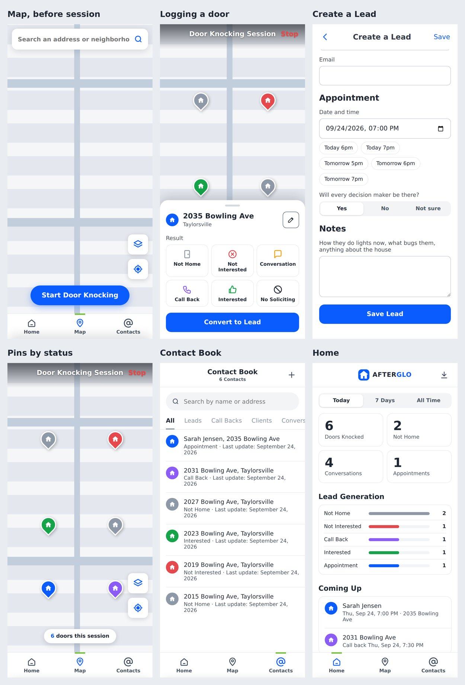

Index / AFTERGLO / Item 1.5
Porchlight
To be writtenPorchlight: what a rep does with it (two sentences).
- Part
- Porchlight: Door Knocking
- Built with
- Flutter, Firebase, Google Maps
- Status
- Web prototype working, Flutter app in development
Screens
The logo: a navy house shaped like a P, with a lit door and an amber porch light
The web prototype: map, logging a door, creating a lead, pins by status, contact book, home stats
Specifications
- Replaces
- Harvast, which forced full customer info on every door
- Who uses it
- Setters work the map and log doors. Closers work the appointments and leads the setters create.
- Sessions
- Start a door-knocking session before pins can drop, so panning the map never logs a house by accident
- Results
- One tap per door: not home, not interested, conversation, call back, interested, no soliciting
- Leads
- Convert a pin to a lead and book a published calendar slot
- Texts
- One-tap customer texts: the setter's confirmation and the closer's on my way
- Home
- Today, 7-day, and all-time stats, lead generation bars, coming up, and CSV export
- Backend
- Firebase: email, Google, and Apple sign-in, Firestore, Storage, push notifications, Crashlytics, Cloud Functions
- Maps
- Google Maps
How it got built
To be writtenWhy the team needed Porchlight and how it's used on a knocking day.